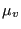
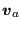
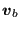
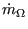
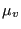
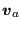
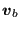
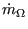

Next: Irrotational incompressible inviscid flow Up: Types of analysis Previous: Shallow water motion Contents
In hydrodynamic lubrication a thin oil film constitutes the interface between a static part and a part rotating at high speed in all kinds of bearings. A quantity of major interest to engineers is the load bearing capacity of the film, expressed by the pressure. Integrating the hydrodynamic equations over the width of the thin film leads to the following equation [27]:
where  is the film thickness,
is the film thickness,
 is the mean density
across the thickness,
is the mean density
across the thickness,  is the pressure,  is the dynamic viscosity of
the fluid,
 is the velocity on one side of the film,
 is the velocity at the other side of the film and
 is the resulting volumetric flux (volume per second and per unit
of area) leaving the film through the porous walls (positive if leaving the
fluid). This term is zero if the walls are not porous.
is the pressure,  is the dynamic viscosity of
the fluid,
 is the velocity on one side of the film,
 is the velocity at the other side of the film and
 is the resulting volumetric flux (volume per second and per unit
of area) leaving the film through the porous walls (positive if leaving the
fluid). This term is zero if the walls are not porous.
For practical calculations the density and thickness of the film is assumed to
be known, the pressure is the unknown. By comparison with the heat equation, the correspondence in Table
(11) arises.
 is the mean velocity over
the film,
is the mean velocity over
the film,
 its component orthogonal to the boundary. Since
the governing equation is the result of an integration across the film
thickness, it is again two-dimensional and applies in the present form to a
plane film. Furthermore, observe that it is a steady state equation (the time
change of the density on the right hand side is assumed known) and as such it
is a Poisson equation. Here too, just like for the shallow water equation, the
heat transfer equivalent of a
spatially varying layer thickness is a spatially varying conductivity coefficient.
its component orthogonal to the boundary. Since
the governing equation is the result of an integration across the film
thickness, it is again two-dimensional and applies in the present form to a
plane film. Furthermore, observe that it is a steady state equation (the time
change of the density on the right hand side is assumed known) and as such it
is a Poisson equation. Here too, just like for the shallow water equation, the
heat transfer equivalent of a
spatially varying layer thickness is a spatially varying conductivity coefficient.